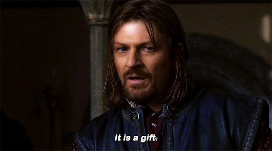

Keyword clustering, produktové popisy a sitemapy na autopilotu
Ondřej Chaloupecký
Data přitékají
z předchozího uzlu
Pravidla, která
nastavíte v UI
Výsledek teče
do dalšího uzlu
n8n není magie — je to hloupé a velmi poslušné potrubí na data. Nedělá nic, co mu explicitně neřeknete.
Každý uzel dělá jednu věc: transformuje vstup na výstup.
Ukažte tlačítko „Execute Node" a demonstrujte, jak se levý panel (Input) liší od pravého panelu (Output) po proběhnutí akce.
Vizuální rozdíl vstupních a výstupních dat je nejrychlejší způsob, jak pochopit celý koncept.
Není to kód — je to způsob, jak zapsat informace tak, aby jim rozuměl stroj i člověk.
Funguje na principu Klíč : Hodnota
Data v n8n neputují jako jeden text, ale jako „seznam krabic" — technicky: Array of JSON objects. Každá krabice = jeden Item.
= 1 produkt z feedu · 1 klíčové slovo z GSC · 1 URL ze sitemapy · 1 řádek z reportu
Čím se workflow spouští?
Co se děje uvnitř?
Konec cesty
n8n čeká. Formulář odeslaný uživatelem ho ihned probudí. Stripe, Typeform...
n8n se pravidelně ptá: „Je tu něco nového?" Schedule, Cron...
Přejmenuj sloupce GSC („query“ → „klíčové_slovo“), odmaž co nepotřebujiš.
Intent klasifikace: IF kw obsahuje „koupit“ → transakční. IF volume > 1000 → priorita vysoká.
Sloučí data z GSC a Semrush do jedních výsledků — jeden kompletní datový stream.
Přetáhněte myší proměnnou z dřívější nody (e-mail klienta) přímo do pole aktuální nody — bez psaní kódu.
Data míří do cílové aplikace — konečná zastávka potrubí.
Push popisu do CMS vrátí ID nově vytvořeného produktu. Zapsání keywordu do Airtable vrátí ID záznamu. S těmito daty lze dál pracovat.
API klíč nebo heslo vytvoříte jednou na jednom místě a v uzlech ho jen vybíráte z roletky. Změníte heslo? Upravíte ho jednou — všechny nody fungují dál.
Credentials jsou bezpečně uloženy a odděleny od logiky. Vykopírujete-li workflow kolegovi, vaše hesla a klíče se nikdy nepředají.
Workflow se spustí jen tehdy, když vy sami kliknete na „Test step".
Hned za trigger vložte tuto nodu a vytvořte v ní fiktivní produkt ručně (sku: TEST-001, popis: "", parametry: "14\" i7 16GB").
Zkoušejte složitou logiku (třeba větvení pomocí Switch) se „slepým" JSON Itemem, dokud si nejste 100% jistí. Teprve pak vyměňte Manual Trigger za reálný zdroj dat.
Pošle jeden prompt → dostane jednu odpověď. Konec. Žádná paměť, žádné nástroje, žádné rozhodování.
Agent sám rozhoduje, jaké nástroje použije a kolikrát — může volat vyhledávání, psát do DB, kontrolovat výsledky a opakovat.
Vizuální programování svádí k tomu stavět jedno obrovské workflow s desítkami uzlů a zcela generickými názvy.
Stavět malá, specializovaná a opakovaně použitelná workflow. Každé dělá jednu věc a dělá ji dobře.
Krocení velkého objemu dat po dávkách — rate limiting, izolace chyb, kontrolovaná smyčka.
Modulární architektura — volání podřízených procesů namísto jedné obrovské nudle.
Don't Repeat Yourself — Neopakuj se.
Pokud stavíte stejnou sekvenci uzlů potřetí, je nejvyšší čas ji přesunout do samostatného sub-workflow a volat ji z každého workflow zvlášť.
GSC API dovoluje max. 200 requestů za sekundu a 2 000 queries za den. Loop posílá dávky URL po 100 s Wait node 0,5 s pauzy — bez toho dostanete Error 429 při auditu 100 000 URL.
Generujete 5 000 produktových popisů. U 312. selže AI API (timeout). Bez Loopu → celé workflow havaruje, ostatní popisy se nevygenerují. S Loopem → chybu zachytíte, přeskočíte a plynule pokračujete dál.
Nové workflow začínající uzlem Execute Workflow Trigger. Za něj poskládáte opakující se logiku (formátování zprávy, odesílání notifikace, výpočet ceny...).
V hlavním procesu vložíte uzel Execute Workflow a v nastavení vyberete child ze seznamu. Tím ho „zavoláte" z libovolného počtu jiných workflow.
Cokoliv do Execute Workflow nody vteče, přenese se do child jak je. Jakmile child skončí, výsledek se vrátí zpět a Parent pokračuje dál.
Nativní nody pro Google Search Console, Semrush nebo Ahrefs v n8n pod kapotou nedělají nic jiného, než že posílají obyčejný HTTP Request. A tam, kde nativní noda chybí, stačí HTTP Request noda přímo — GSC API, Semrush API, Ahrefs, interní PIM.
Jakmile ovládnete HTTP Request nodu, nepotřebujete čekat, až n8n přidá podporu pro vaši aplikaci. Napojíte se na cokoliv na světě, co má API.
Pro SEO: GSC Search Analytics API, Semrush Reports API, Ahrefs API, Screaming Frog API, interní PIM/CMS...
Odstraňte diakritiku, lowercase, mezery → pomlčky. Jeden Code Node = konzistentní URL slugy pro celý katalog.
Z názvu produktu vyťahuje Regex velikost displeje, RAM, údivu kapacitu — bez různorodých formátů z feedů.
Sloučít GSC + Semrush = duplikáty. Code Node zůstává unikáty + word-overlap clustering pro blízká KW.
Jděte do ChatGPT nebo Claude, vložte ukázku dat vstupu, popište, co má vypadnout — a AI vám vygeneruje přesný JavaScript kód pro n8n.
Wait node pozastaví běh workflow na nastavenou dobu — nebo počká na příchozí webhook odpověď z externí služby.
Loop pošle 100 URL na GSC API → Wait 0,5 s → dalších 100. Bez toho: Error 429.
Vygeneruj popis → počkej 24 h → pošli ho na kontrolu. Jedno workflow, žádný cron.
AI vygeneruje popis → pošle link na schválení → Wait čeká, dokud šéf neklikne → pak teprve zapsat do CMS.
Sloučí všechny Items do jednoho (např. všechny popisy do jednoho e-mailu, nebo celý keyword list do jednoho CSV).
Spoj data ze dvou pipeline — např. GSC data + Semrush data po jednom klíčovém slovu (Inner Join).
Přejmenování klíčů, odmazaní nepŕebytnych polí, doplnění výchozích hodnot — základní hygiena každého workflow.
API klíče a tokeny uložte jako $env.GSC_API_KEY — nikdy nepsávat přímo do workflow.
Otevřete workflow za 3 měsíce — budete rádi, že jste pojmenovali uzly správně.
Každá node má záložku Notes. Skvělé pro vysvětlení složitějších kroků — budoucí já i kolegové budou vděční.
Barevné bloky přímo na plátně vizuálně rozbijí obrovskou nudli do logických celků. Zvlášť užitečné u chatbotů a AI workflow.
Přidejte poznámku i k bloku jako celku: proč existuje, jaký je jeho účel a na co si dát pozor při úpravách.
Pokud node selže, celé workflow se okamžitě zastaví a zčervená. Další kroky se neprovedou.
Nachází se v nastavení každé nody (Settings).
Speciální záchranné workflow, které se automaticky spustí, když jakékoli jiné workflow spadne.
Levé menu → Executions = kompletní deník toho, co se skutečně stalo v produkci. Vše s přesnými daty a časovými razítky.
Na prázdném plátně nic neuvidíte. Otevřete Executions, najděte červený běh → n8n ukáže přesný uzel, kde havaroval, včetně dat (Items), která do něj v tu chvíli tekla.
Zákazník napsal text místo čísla a databáze ho odmítla? Přišpendlete si vadný záznam z Executions zpět na testovací plátno — opravujete logiku bez toho, abyste formulář museli znovu ručně vyplňovat.
Prohlédněte si i úspěšná provedení — vidíte přesně, jaká data prošla každým uzlem. Nejlepší způsob, jak pochopit, co vaše workflow opravdu dělá.
| Funkce | 📗 Google Sheets | 🐘 PostgreSQL |
|---|---|---|
| Rychlost nasazení | ⚡ Blesková | 🐢 Pomalejší |
| Spolehlivost při zátěži | ❌ Nízká | ✅ Extrémně vysoká |
| Lidská čitelnost | ✅ Výborná | ⚠️ Vyžaduje nástroj |
| Riziko rozbití | ❌ Vysoké | ✅ Minimální |
| Vyhledávání (Query) | ⚠️ Pomalé & omezené | ✅ Rychlé (SQL) |
Stažujte data z několika zdrojů najednou a sloučte je pomocí Merge node do jednoho streamu Items — každé klíčové slovo = 1 Item.
Každé klíčové slovo = jeden Item. Switch node ho automaticky zařadí do košíku:
Každé KW má: intent, volume, přiřazenou URL a aktuální GSC pozici.
PIM feed nebo CSV export → n8n zpracuje každý produkt automaticky jeden po druhém.
Gemini node vygeneruje SEO popis z parametrů. Výsledek projde kontrolou kvality.
Zpracuj jen produkty, kde popis == "" nebo délka < 100 znaků. Ostatní přeskoč.
Code Node sjednotit různorodé formáty z feedů různých dodavatelů:
Výsledek: stovky produktových popisů na autopilotu, konzistentní formát parametrů napříč celým katalogem.
Každý týden stažuj aktuální sitemap.xml, porovnej s minulým během a detekuj změny:
URL, které zmizely ze sitemap, ale stále se rankují v GSC → pravděpodobná kanibalizace nebo chybějící redirect.
Automatický přehled stavu kategorií a produktů:
Flaguj kategorie s < 5 produkty — SEO thin content riziko
% produktů s vyplněným popisem, parametry a fotkami
Stránky bez jediného interního odkazu = neviditelné pro Google
Produkt na pozici 3, ale CTR < 1 %? Pravděpodobně problém s title nebo meta popisem.

V druhé části si postavíme firemního chatbota, který zná váš produktový katalog
a odpovídá stylem kovboje z divokého západu 🤠
Service Account
credentials
AI Agent
+ Google Sheets nástroj
Simple Memory
+ Chat Trigger